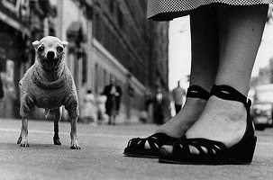
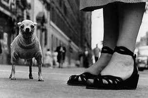

Главная
New York — крупнейший город восточного побережья Соединенных Штатов, деловой, политический, культурный и много какой еще центр страны. «Фишка» NYC — в том, что он всегда сумеет предстать перед вами именно той стороной своего многоликого характера, которая вам по нраву: магазинами или музеями, хип-хоп тусовками Бронкса или голосами Метрополитен-оперы, старинными зданиями в голландском стиле или сияющими зеркальными фасадами небоскребов.
Численность населения Нью-Йорка давно перевалила за 19 миллионов, а такого разнообразия культуры, развлечений, бизнеса и торговли, как здесь, больше нет ни в одном городе страны.
 
